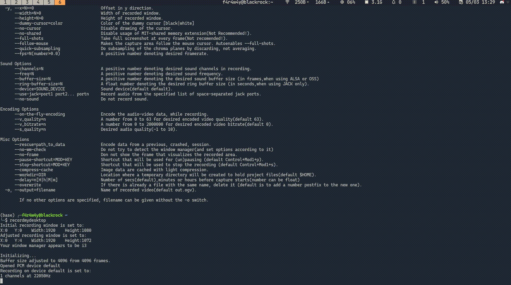

Visualisasi Data dari Arduino in a more elegant way
Ini merupakan sebuah eksperimen iseng yang saya lakukan untuk mempermudah visualisasi data saat hendak melakukan signal processing dari data yang sudah diambil menggunakan arduino, sebelum menemukan solusi yang cepat, mudah, efisien, dan tidak bloated/overkill saya melakukan banyak browsing hingga akhirnya menemukan gnuplot, dimana gnuplot ini bisa dibilang sebuah alternatif mudah untuk bisa memvisualisasikan data dalam bentuk grafik tanpa perlu menggunakan matlab ataupun python.
Dan terlebih dari hanya sekedar eksperimen kecil, disini juga saya gunakan arduino-cli yang merupakan sebuah open source tool terbaru yang direlease oleh arduino nya langsung, jadi bagi para manusia pecinta terminal bisa melakukan segala hal yang berhubungan dengan arduino tanpa perlu campur tangan IDE nya (go mouseless iykwim), dan juga kita bisa melakukan automasi dalam segala bidang (pipelining you know ?) bahkan mungkin arduino as a service, oke maaf saya sudah berlebihan wkwk (but its actually a good idea, isnt it).
The beginning of the arduino automation
Dengan menggunakan arduino-cli, kita bisa melakukan banyak hal seperti berikut tanpa perlu membuka IDE nya dulu (again, go mouseless) :
- board Arduino board commands.
- burn-bootloader Upload the bootloader.
- compile Compiles Arduino sketches.
- core Arduino core operations.
- debug Debug Arduino sketches.
- lib Arduino commands about libraries.
- sketch Arduino CLI sketch commands.
- update Updates the index of cores and libraries
- upgrade Upgrades installed cores and libraries.
- upload Upload Arduino sketches.
Sangat banyak yang bisa kita lakukan bukan ?, dan dengan begini kita bisa dengan lebih jelas mengetahui apa yang sebenarnya terjadi saat kita meng-klik suatu tombol pada IDE nya.
Okay, mari saya percepat penjelasannya dengan langsung hands-on dan gunakan command yang kita perlukan untuk bisa melakukan seluruh workflow pada arduino dari mulai pembuatan sketch, compile, hingga upload sketch ke arduino nya.
(Untuk detail mengenai command-command nya silahkan baca dokumentasi nya, karena artikel nya akan menjadi out-of-context bila saya jelaskan bagian ini terlalu berlebihan)
-> Installation
Oke biar ga ribet baca dokumentasi (walaupun saran saya demikian, karena cara disini bisa jadi akan obsolete):
Melalui curl [silahkan ganti nilai BINDIR dengan target tempat instalasi yang diinginkan] :
curl -fsSL https://raw.githubusercontent.com/arduino/arduino-cli/master/install.sh | BINDIR=/bin sudo sh
Bisa juga kalian download langsung saja binary file nya di link berikut ini:
https://arduino.github.io/arduino-cli/latest/installation/#download
-> Automation
Saya asumsikan kalian sudah mengerti workflow pada arduino secara biasanya, sekarang kita ubah semua hal itu dengan menggunakan arduino-cli, seperti berikut :
Hubungkan arduino nya ke komputer dengan menggunakan USB (ya jelas, apalagi), dan masukkan command seperti berikut :
╭─f4r4w4y@blackrock ~/Documents/random ╰─$ arduino-cli board list Port Type Board Name FQBN Core /dev/ttyACM0 Serial Port (USB) Arduino Uno arduino:avr:uno arduino:avr /dev/ttyS0 Serial Port UnknownSeperti yang bisa dilihat, dia langsung mendeteksi sekaligus meng-outputkan board arduino yang terhubung pada komputer kita beserta port tempat dia terhubung (mantap kan ?).
Dari situ terdapat hal penting, dan yang paling penting kita perhatikan adalah bagian FQBN (Fully Qualified Board Name), karena ini akan berhubungan dengan command selanjutnya.
NOTES, jika ternyata terdeteksi ada board tetapi tidak dituliskan Board Name dan/atau FQBN nya, tenang saja anda masih bisa menebak-nebak sesuai arduino nya, misal pada arduino nano (yang biasa terjadi): gunakan saja FQBN nya yaitu
arduino:avr:nanoSetelah itu kita harus menginstall core yang sesuai dengan FQBN yang kita dapatkan melalui command sebelumnya tadi.
Dikarenakan saya menggunakan arduino uno yang FQBN nya
arduino:avr:unoyang mengartikan bahwa UNO merupakan AVR-family, maka saya harus menginstall core untuk AVR-family board seperti berikut :╭─f4r4w4y@blackrock ~/Documents/random ╰─$ arduino-cli core install arduino:avr Downloading packages... arduino:avr-gcc@7.3.0-atmel3.6.1-arduino7 already downloaded arduino:avrdude@6.3.0-arduino17 already downloaded arduino:arduinoOTA@1.3.0 already downloaded arduino:avr@1.8.3 already downloaded Installing arduino:avr-gcc@7.3.0-atmel3.6.1-arduino7... arduino:avr-gcc@7.3.0-atmel3.6.1-arduino7 installed Installing arduino:avrdude@6.3.0-arduino17... arduino:avrdude@6.3.0-arduino17 installed Installing arduino:arduinoOTA@1.3.0... arduino:arduinoOTA@1.3.0 installed Installing arduino:avr@1.8.3... Configuring platform... arduino:avr@1.8.3 installedSebelum kita membuat kode, kita akan buat sketch nya terlebih dahulu untuk nantinya kita compile dan upload, kita bisa membuat sketch nya dengan cara seperti berikut :
╭─f4r4w4y@blackrock ~/Documents/random ╰─$ arduino-cli sketch new fun_code Sketch created in: /home/f4r4w4y/Documents/random/fun_codePerlu diingat bahwa kalian bisa menggunakan nama saja untuk sketch nya, disitu saya contohkan dengan
fun_code.Secara otomatis akan terbuat folder
fun_codeyang didalamnya terdapatfun_code.inoyang merupakan file program utamanya yang akan kita ubah dengan kode yang kita inginkan (seperti saat ngoding di IDE), kalian bisa mengedit file.inoini menggunakan text editor apapun (vscode, vim, emacs, dan lainnya).Mari kita buat sebuah kode sederhana untuk membaca data dari sebuah sensor ultrasonik sebagai contohnya, berikut kode yang dipakai :
#define echoPin 2 #define trigPin 3 long duration; int distance; void setup() { pinMode(trigPin, OUTPUT); pinMode(echoPin, INPUT); Serial.begin(9600); } void loop() { digitalWrite(trigPin, LOW); delayMicroseconds(2); digitalWrite(trigPin, HIGH); delayMicroseconds(10); digitalWrite(trigPin, LOW); duration = pulseIn(echoPin, HIGH); distance = duration * 0.034 / 2; Serial.println("Distance: " + String(distance) + " cm"); delay(500); }Setelah membuat kodenya, mari kita compile dengan cara seperti berikut ini :
Masuk dulu kedalam folder sketch nya.
╭─f4r4w4y@blackrock ~/Documents/random ╰─$ cd fun_codeLalu kita compile kode nya.
╭─f4r4w4y@blackrock ~/Documents/random/fun_code ╰─$ arduino-cli -b arduino:avr:uno compile -v Using board 'uno' from platform in folder: /home/f4r4w4y/.arduino15/packages/arduino/hardware/avr/1.8.3 Using core 'arduino' from platform in folder: /home/f4r4w4y/.arduino15/packages/arduino/hardware/avr/1.8.3 Detecting libraries used... [LONG OUTPUT] Sketch uses 4384 bytes (13%) of program storage space. Maximum is 32256 bytes. Global variables use 212 bytes (10%) of dynamic memory, leaving 1836 bytes for local variables. Maximum is 2048 bytes.Disitu saya compile menggunakan opsi
-vyang akan mengoutputkan keseluruhan proses dari kompilasi programnya (ingat v mengartikan verbose), jika kalian tidak ingin melihat output teks yang panjang itu maka tidak perlu ditambahkan-vnya.Dan perlu diketahui bahwa opsi
-bitu digunakan untuk memberitahukan kepada compilernya apa FQBN yang akan digunakan untuk mengkompilasi program tersebut, ini kita gunakan FQBN yang kita dapatkan dari tahap pertama yang sudah saya jelaskan diatas.Setelah di compile, maka hasil compile nya akan ditaruh di folder yang tertera pada output dari kompilasi saat menggunakan opsi
-v, akan tetapi hasil kompilasi nya juga bisa kita outputkan di folder sketch saat ini dengan cara menambahkan opsi-e, yang nantinya setelah kompilasi akan terdapat beberapa hasilnya seperti berikut :╭─f4r4w4y@blackrock ~/Documents/random/fun_code ╰─$ ll total 8,0K drwxr-xr-x 3 f4r4w4y f4r4w4y 4,0K Mar 5 08:04 build -rw-r--r-- 1 f4r4w4y f4r4w4y 446 Mar 5 07:55 fun_code.ino ╭─f4r4w4y@blackrock ~/Documents/random/fun_code ╰─$ tree build build └── arduino.avr.uno ├── fun_code.ino.eep ├── fun_code.ino.elf ├── fun_code.ino.hex ├── fun_code.ino.with_bootloader.bin └── fun_code.ino.with_bootloader.hex 1 directory, 5 filesSetelah kita compile programnya, kita bisa langsung saja upload hasil kompilasinya kedalam arduino nya dengan menggunakan command
uploadseperti berikut :╭─f4r4w4y@blackrock ~/Documents/random/fun_code ╰─$ arduino-cli -b arduino:avr:uno -p /dev/ttyACM0 upload -v "/home/f4r4w4y/.arduino15/packages/arduino/tools/avrdude/6.3.0-arduino17/bin/avrdude" "-C/home/f4r4w4y/.arduino15/packages/arduino/tools/avrdude/6.3.0-arduino17/etc/avrdude.conf" -v -V -patmega328p -carduino "-P/dev/ttyACM0" -b115200 -D "-Uflash:w:/tmp/arduino-sketch-4458DF6C1E2A31A6B3A97B09078FC49A/fun_code.ino.hex:i" [LONG OUTPUT] avrdude: AVR device initialized and ready to accept instructions Reading | ################################################## | 100% 0.00s avrdude: Device signature = 0x1e950f (probably m328p) avrdude: reading input file "/tmp/arduino-sketch-4458DF6C1E2A31A6B3A97B09078FC49A/fun_code.ino.hex" avrdude: writing flash (4384 bytes): Writing | ################################################## | 100% 0.83s avrdude: 4384 bytes of flash written avrdude done. Thank you.Seperti yang bisa dilihat, outputnya sangat panjang karena saya menggunakan opsi
-vdan saya juga sarankan untuk selalu menggunakan-vsaat compile dan upload agar mempermudah untuk mendebug saat ada kesalahan yang terjadi.Disitu juga saya gunakan opsi
-bsama seperti proses kompilasi untuk memberitahuarduino-clinya FQBN apa yang akan dipakai, lalu digunakan opsi-puntuk memberitahukan port tempat arduino nya terhubung, ini bisa didapatkan dari tahap pertama yang juga sudah saya jelaskan ditahap tersebut.
TIPS: kalian bisa saja meng-compile dan upload disaat bersamaan dengan menggunakan command
arduino-cli -b arduino:avr:uno -p /dev/ttyACM0 compile -v -u
Here comes the python
Setelah program berhasil kita compile dan upload ke arduino nya, maka selanjutnya kita bisa melihat output dari komunikasi serial pada program dengan menggunakan package pyserial pada python.
Sebelum kesana saya ingin memberi tips sederhana (untuk UNIX-family user) karena pada dasarnya di konsep UNIX semua hal merupakan file, maka dari itu kita bisa langsung membaca port nya menggunakan cat untuk melihat data yang diterima melalui komunikasi serial nya, contohnya seperti berikut ini :
(base) ╭─f4r4w4y@blackrock ~/Documents/random/fun_code
╰─$ sudo cat /dev/ttyACM0
[sudo] password for f4r4w4y:
Distance: 6 cm
Distance: 5 cm
Distance: 5 cm
Distance: 5 cm
Distance: 5 cm
Distance: 5 cm
Distance: 5 cm
Pretty handy, right ?

Okee sekarang mari kita lakukan hal yang sama di python untuk mem-parse data dari komunikasi serial tersebut, dan selanjutnya kita masukkan ke file untuk nantinya di visualisasikan menggunakan gnuplot.
Saya tidak akan menjelaskan cara menginstall pyserial nya, karena kalian bisa langsung saja lihat pada link github nya untuk lebih detail.
Berikut ini adalah fully-commented python code yang saya gunakan (dan sudah ada penjelesan detail menggunakan komen) :
# Berikut ini digunakan untuk mengimport
# seluruh package yang akan digunakan pada program ini
import serial, sys, time, os
# Fungsi ini digunakan untuk mendapatkan waktu
# sekarang saat program nya sedang berlangsung
# yang nantinya akan digunakan sebagai x axis
# dari grafik yang dibuat
def getCurTime(st):
return "{:.3f}".format(time.time() - st)
start_time = time.time()
# Berikut ini untuk menghubungkan ke komunikasi
# serial nya dengan cara memasukkan baudrate dan
# port yang sesuai
ser = serial.Serial()
ser.baudrate = 9600
ser.port = '/dev/ttyACM0'
ser.open()
while True:
try:
# readline() ini digunakan untuk membaca data
# dari komunikasi serial hingga ditemukan "\n"
line = ser.readline()
line = line.decode("utf-8")
# Dari data tersebut kita ambil bagian value nya
# saja dengan cara menghilangkan bagian "Distance: "
# dan juga bagian " cm\r\n" nya
# ---
# ini bisa diketahui dengan print() dulu value line
# diatas sebelumnya
line = line.split("Distance: ")[1]
distance_val = line.split(" cm\r\n")[0]
# Bagian ini berguna untuk menuliskan datanya
# ke file output.txt agar nantinya bisa dibaca
# oleh gnuplot untuk mem-plot grafik nya
with open("output.txt", "a") as f:
f.write(f"{getCurTime(start_time)} {distance_val}\n")
# Ini untuk printing saja, agar kita tetap bisa
# keep track data-data yang didapatkan secara
# realtime
print(f"['{getCurTime(start_time)}', '{distance_val}']")
except KeyboardInterrupt:
# Bagian ini akan dijalankan saat kalian
# mengklik ctrl+C, maka program akan menghapus
# file output.txt dan menutup koneksi serial nya
# agar tidak menghabiskan memori
os.remove("output.txt")
ser.close()
sys.exit()
except:
continue
Saya menamai kode itu sebagai readNwrite.py.
Lets plot it !!!
INTERMEZZO: Perlu diingat bahwa gnuplot tidak ada hubungannya dengan GNU wkwk.
Pada UNIX based OS, kalian bisa menginstall gnuplot seperti biasa menggunakan package manager masing masing, contohnya sudo apt-get install gnuplot, akan tetapi untuk windows, kalian harus mendownload gnuplot di link ini.
Intinya untuk bagian ini kita akan melakukan beberapa hal yaitu seperti berikut :
- Membaca data dari file output.txt
- Plot data sebelum spasi (waktu) pada file tersebut pada sumbu x
- Plot data setelah spasi (distance) pada file tersebut pada sumbu y
Kita bisa melakukan hal tersebut dengan menggunakan code ini :
plot "output.txt" using 1:2 with linespoint
pause .5
reread
Saya menamai kode itu sebagai plot.aja.
Untuk menjalankannya kita akan pertama-tama menjalankan kode python nya terlebih dahulu dengan python readNwrite.py.
Setelah itu disaat yang bersamaan kita jalankan juga kode untuk gnuplot nya ini dengan cara :
╭─f4r4w4y@blackrock ~/Documents/random
╰─$ gnuplot -c plot.aja
Untuk yang menggunakan windows, dikarenakan gnuplot nya tidak dijalankan dengan terminal tapi menggunakan aplikasinya, maka tinggal masukkan command
load "plot.aja"kedalam aplikasi gnuplot nya saat sudah dibuka.
Dan bisa kalian lihat sendiri setelah mencoba, hasilnya akan kurang bagus karena grafik berusaha menampilkan seluruh datanya, untuk memperbagus bisa kita potong sehingga data yang ditampilkan pada grafik hanya 35 data terakhir dengan cara merubah kode plot.aja nya menjadi berikut :
plot "< tail -n 35 output.txt" using 1:2 with linespoint
pause .5
reread
Saya belum mencoba cara itu di windows karena itu menggunakan command UNIX-family, jadi bila tidak bisa dijalankan di windows, silahkan ubah kode python nya agar menghapus data sebelumnya dan menyisakan 35 data saja selama proses menulis data ke file output.txt, tapi untuk ini akan saya tinggalkan sebagai latihan bagi para pembaca hehe :D
Demo


Last word
Semoga artikel nya mudah dipahami dan menyenangkan, jika memang dirasa bermanfaat silahkan sebarkan kepada yang lainnya agar ilmu nya tidak berhenti disini saja.
Terimakasih kepada Allah SWT dan juga para pembaca disini, semua yang buruk datangnya dari saya dan yang baik hanya datang dari-Nya, mohon maaf bila ada kesalahan 🙏.